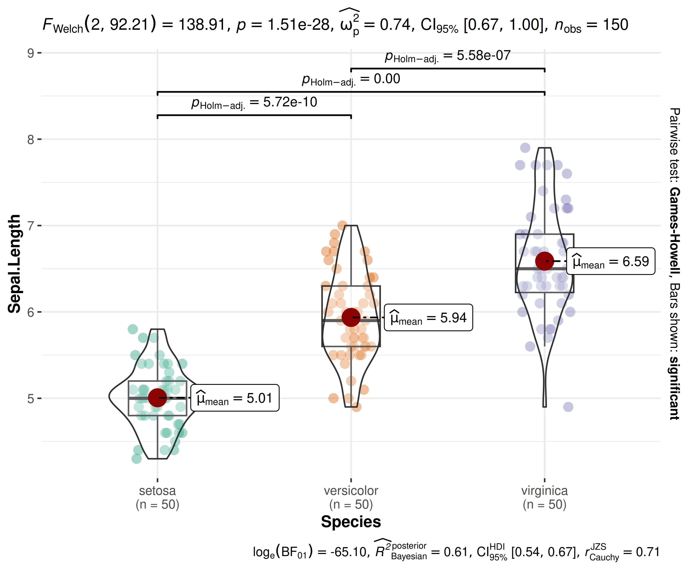
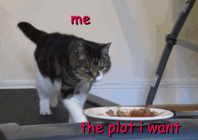

Statistical Visualizations with {ggstatsplot}: A Biography
Indrajeet Patil

Genesis
Why a new software?
Life in the trenches (c. 2017, Harvard)
External Stimulus
- Reporting errors:
“half of all published psychology papers contained at least one p-value that was inconsistent”1
- Interpretation errors:
“in 72% of cases, nonsignificant results were misinterpreted [to mean] that effect was absent”2
- Replication crisis:
“39% of effects were subjectively rated to have replicated the original result”3
and more…
Internal Response
How to:
- avoid reporting errors?
- improve quality of statistical reporting?
- emphasize the importance of the effect?
- interpret null results?
- easily assess validity of model assumptions?
- increase replicability?
Proposal
Information-rich, ready-made statistical visualizations
(minimal effort and maximum transparency)
A visualization with statistical summary

💡 Visualizations reveal problems not discernible from model summaries!
Ready-made plots with one-line syntax
The grammar of graphics framework can prepare any visualization! But building plots from scratch can be time-consuming.

💡 Using ready-made plots lowers the effort needed for visualizing data!
Action Plan
ggstatsplot was born!
(open-sourced on GitHub in 2017; still actively developed)
Example function
E.g., for hypothesis about differences between groups
Important
Information-rich defaults
- raw data + distributions
- descriptive statistics
- inferential statistics
- effect size + uncertainty
- pairwise comparisons
- Bayesian hypothesis-testing
- Bayesian estimation
Statistical approaches available
- parametric
- non-parametric
- robust
- Bayesian
And there is more!
Appendix provides more details.
Promised Land
Does it deliver?
Show, don’t tell
Without ggstatsplot
Pearson’s correlation test revealed that, across 142 participants, variable x was negatively correlated with variable y: \(t(140)=-0.76, p=0.446\). The effect size \((r=-0.06, 95\% CI [-0.23,0.10])\) was small, as per Cohen’s (1988) conventions. The Bayes Factor for the same analysis revealed that the data were 5.81 times more probable under the null hypothesis as compared to the alternative hypothesis. This can be considered moderate evidence (Jeffreys, 1961) in favor of the null hypothesis (absence of any correlation between x and y).
With ggstatsplot

✅ No need to worry about reporting or interpretation errors!
Thoughtful Defaults
Data Visualization
Statistical Reporting

✅ Follows best practices in data visualization and statistical reporting!
Impact
I can haz users?!
User Love
Total downloads > 500K (97 percentile)

Total citations > 1000
From publications across a wide range of fields:
biology, medicine, psychology, economics, etc.

Pleasant Side Effects
Maybe the real treasure was the skills we acquired along the way!
Software Architecture
Breaking down the monolith: \(20K_{(2017)} \rightarrow 1K_{(2024)}\) lines of code
flowchart LR
ggstatsplot[ggstatsplot]
statsExpressions[statsExpressions]
note["backend engine"]
subgraph easystats[easystats]
effectsize[effectsize]
insight[insight]
parameters[parameters]
performance[performance]
bayestestR[bayestestR]
end
%% Main dependencies
ggstatsplot --> statsExpressions
ggstatsplot --> dots[Other dependencies]
%% Add note connecting to the main relationship
note -.-> statsExpressions
%% statsExpressions dependencies on easystats packages
statsExpressions --> effectsize
statsExpressions --> insight
statsExpressions --> parameters
statsExpressions --> performance
statsExpressions --> bayestestR
%% Styling using custom colors
style easystats fill:#EED3B1
classDef main fill:#FCF596,stroke:#333,stroke-width:3px
classDef note fill:#ffffff,stroke:#333,stroke-width:1px,stroke-dasharray: 5 5
class ggstatsplot main
class note note
Collaborative Solutions
While re-architecting ggstatsplot, I started contributing upstream.
As part of easystats core team
- leadership skills to steer the project
- long-term vision for the project
- API design
- CI infrastructure
- code review
- documentation
- scouting for new talent
- developer advocacy
- community engagement

Making it a habit
- co-maintainer of ggsignif
- contributor to WRS2, ggcorrplot
Quality Assurance
“The only way to go fast, is to go well.”
- Robert C. Martin
CI Checks (GitHub Actions)
- Unit tests (random-order)
- Code coverage (100%)
- Linting (0 lints)
- Formatting (0 issues)
- Documentation (website, no link rot, plenty examples)
- Pre-commit hooks (0 issues)
- Zero user-facing warnings
- Portability (Linux, macOS, Windows)
- Robustness (dependencies, language versions)
- CRAN checks (0 notes, 0 warnings, 0 errors)
Healthy and active code base
Communication
Training material on best practices in software/package development to support community contributions keeping in mind the diverse backgrounds of contributors.
Biography (2017-)
(Or how developing ggstatsplot continues to help me grow as a software developer)
graph LR
Project[ggstatsplot]
%% Technical Skills Branch
Project --> TechSkills[Technical Skills]
TechSkills --> CodeQuality[Code Quality]
TechSkills --> ArchDesign[Architecture Design]
TechSkills --> TechDebt[Technical Debt]
%% Soft Skills Branch
Project --> SoftSkills[Soft Skills]
SoftSkills --> Collab[Collaboration]
SoftSkills --> Leadership[Leadership]
SoftSkills --> Communication[Communication]
%% Styling using colorblind-friendly palette
classDef mainNode fill:#FCF596,stroke:#000000,stroke-width:3px
classDef broardSkillNode fill:#D0E8C5,stroke:#333,stroke-width:1px
classDef skillNode fill:#ffffff,stroke:#333,stroke-width:1px,stroke-dasharray: 5 5
class Project mainNode
class TechSkills,SoftSkills broardSkillNode
class CodeQuality,ArchDesign,TechDebt,Collab,Leadership,Communication skillNode
Conclusion
ggstatsplot offers an intuitive interface for creating detailed statistical visualizations, enabling users to adopt rigorous, reliable, and robust workflows for data exploration and reporting across various academic and industrial disciplines. It is a well-maintained tool with high-quality infrastructure and widespread adoption.
Thank You 😊
Source code for these slides can be found on GitHub.
For more
If you are interested in good programming and software development practices, check out my other slide decks.
Find me at…
Session information
─ Session info ───────────────────────────────────────────────────────────────
setting value
version R version 4.5.1 (2025-06-13)
os Ubuntu 24.04.2 LTS
system x86_64, linux-gnu
ui X11
language (EN)
collate C.UTF-8
ctype C.UTF-8
tz UTC
date 2025-08-03
pandoc 3.7.0.2 @ /opt/hostedtoolcache/pandoc/3.7.0.2/x64/ (via rmarkdown)
quarto 1.8.18 @ /usr/local/bin/quarto
─ Packages ───────────────────────────────────────────────────────────────────
package * version date (UTC) lib source
base * 4.5.1 2025-06-13 [3] local
BayesFactor 0.9.12-4.7 2024-01-24 [1] RSPM
bayestestR 0.16.1 2025-07-01 [1] RSPM
bitops 1.0-9 2024-10-03 [1] RSPM
boot 1.3-31 2024-08-28 [3] CRAN (R 4.5.1)
BWStest 0.2.3 2023-10-10 [1] RSPM
cachem 1.1.0 2024-05-16 [1] RSPM
cli 3.6.5 2025-04-23 [1] RSPM
coda 0.19-4.1 2024-01-31 [1] RSPM
codetools 0.2-20 2024-03-31 [3] CRAN (R 4.5.1)
compiler 4.5.1 2025-06-13 [3] local
correlation 0.8.8 2025-07-08 [1] RSPM
cranlogs 2.1.1 2019-04-29 [1] RSPM
curl 6.4.0 2025-06-22 [1] RSPM
data.table 1.17.8 2025-07-10 [1] RSPM
datasets * 4.5.1 2025-06-13 [3] local
datawizard 1.2.0 2025-07-17 [1] RSPM
digest 0.6.37 2024-08-19 [1] RSPM
dplyr 1.1.4 2023-11-17 [1] RSPM
effectsize 1.0.1 2025-05-27 [1] RSPM
evaluate 1.0.4 2025-06-18 [1] RSPM
farver 2.1.2 2024-05-13 [1] RSPM
fastmap 1.2.0 2024-05-15 [1] RSPM
fasttime 1.1-0 2022-03-16 [1] RSPM
generics 0.1.4 2025-05-09 [1] RSPM
ggplot2 * 3.5.2 2025-04-09 [1] RSPM
ggrepel 0.9.6 2024-09-07 [1] RSPM
ggsignif 0.6.4 2022-10-13 [1] RSPM
ggstatsplot * 0.13.1.9000 2025-06-15 [1] Github (IndrajeetPatil/ggstatsplot@e4a7018)
glue 1.8.0 2024-09-30 [1] RSPM
gmp 0.7-5 2024-08-23 [1] RSPM
graphics * 4.5.1 2025-06-13 [3] local
grDevices * 4.5.1 2025-06-13 [3] local
grid 4.5.1 2025-06-13 [3] local
gtable 0.3.6 2024-10-25 [1] RSPM
htmltools 0.5.8.1 2024-04-04 [1] RSPM
httr 1.4.7 2023-08-15 [1] RSPM
insight 1.3.1 2025-06-30 [1] RSPM
jsonlite 2.0.0 2025-03-27 [1] RSPM
knitr 1.50 2025-03-16 [1] RSPM
kSamples 1.2-10 2023-10-07 [1] RSPM
labeling 0.4.3 2023-08-29 [1] RSPM
lattice 0.22-7 2025-04-02 [3] CRAN (R 4.5.1)
lifecycle 1.0.4 2023-11-07 [1] RSPM
lubridate 1.9.4 2024-12-08 [1] RSPM
magrittr 2.0.3 2022-03-30 [1] RSPM
MASS 7.3-65 2025-02-28 [3] CRAN (R 4.5.1)
Matrix 1.7-3 2025-03-11 [3] CRAN (R 4.5.1)
MatrixModels 0.5-4 2025-03-26 [1] RSPM
memoise 2.0.1 2021-11-26 [1] RSPM
methods * 4.5.1 2025-06-13 [3] local
mgcv 1.9-3 2025-04-04 [3] CRAN (R 4.5.1)
multcompView 0.1-10 2024-03-08 [1] RSPM
mvtnorm 1.3-3 2025-01-10 [1] RSPM
nlme 3.1-168 2025-03-31 [3] CRAN (R 4.5.1)
packageRank * 0.9.6 2025-05-01 [1] RSPM
paletteer 1.6.0 2024-01-21 [1] RSPM
parallel 4.5.1 2025-06-13 [3] local
parameters 0.27.0 2025-07-09 [1] RSPM
patchwork 1.3.1 2025-06-21 [1] RSPM
pbapply 1.7-4 2025-07-20 [1] RSPM
performance 0.15.0 2025-07-10 [1] RSPM
pillar 1.11.0 2025-07-04 [1] RSPM
pkgconfig 2.0.3 2019-09-22 [1] RSPM
pkgsearch 3.1.5 2025-04-12 [1] RSPM
PMCMRplus 1.9.12 2024-09-08 [1] RSPM
prismatic 1.1.2 2024-04-10 [1] RSPM
purrr 1.1.0 2025-07-10 [1] RSPM
R.methodsS3 1.8.2 2022-06-13 [1] RSPM
R.oo 1.27.1 2025-05-02 [1] RSPM
R.utils 2.13.0 2025-02-24 [1] RSPM
R6 2.6.1 2025-02-15 [1] RSPM
RColorBrewer 1.1-3 2022-04-03 [1] RSPM
Rcpp 1.1.0 2025-07-02 [1] RSPM
RcppParallel 5.1.10 2025-01-24 [1] RSPM
RCurl 1.98-1.17 2025-03-22 [1] RSPM
rematch2 2.1.2 2020-05-01 [1] RSPM
rlang 1.1.6 2025-04-11 [1] RSPM
rmarkdown 2.29 2024-11-04 [1] RSPM
Rmpfr 1.1-1 2025-07-18 [1] RSPM
rstantools 2.4.0 2024-01-31 [1] RSPM
scales 1.4.0 2025-04-24 [1] RSPM
sessioninfo 1.2.3 2025-02-05 [1] any (@1.2.3)
splines 4.5.1 2025-06-13 [3] local
stats * 4.5.1 2025-06-13 [3] local
statsExpressions 1.7.1 2025-08-03 [1] Github (IndrajeetPatil/statsExpressions@836565a)
stringi 1.8.7 2025-03-27 [1] RSPM
stringr 1.5.1 2023-11-14 [1] RSPM
sugrrants 0.2.9 2024-03-12 [1] RSPM
SuppDists 1.1-9.9 2025-03-24 [1] RSPM
tibble 3.3.0 2025-06-08 [1] RSPM
tidyr 1.3.1 2024-01-24 [1] RSPM
tidyselect 1.2.1 2024-03-11 [1] RSPM
timechange 0.3.0 2024-01-18 [1] RSPM
tools 4.5.1 2025-06-13 [3] local
utils * 4.5.1 2025-06-13 [3] local
vctrs 0.6.5 2023-12-01 [1] RSPM
withr 3.0.2 2024-10-28 [1] RSPM
xfun 0.52 2025-04-02 [1] RSPM
yaml 2.3.10 2024-07-26 [1] RSPM
zeallot 0.2.0 2025-05-27 [1] RSPM
[1] /home/runner/work/_temp/Library
[2] /opt/R/4.5.1/lib/R/site-library
[3] /opt/R/4.5.1/lib/R/library
* ── Packages attached to the search path.
──────────────────────────────────────────────────────────────────────────────Appendix
Examples of other functions
ggwithinstats()
Hypothesis about group differences: repeated measures design
Important
✏️ Defaults
- raw data + distributions
- descriptive statistics
- inferential statistics
- effect size + uncertainty
- pairwise comparisons
- Bayesian hypothesis-testing
- Bayesian estimation
Statistical approaches available
- parametric
- parametric
- robust
- Bayesian
gghistostats()
Distribution of a numeric variable
Important
✏️ Defaults
- counts + proportion for bins
- descriptive statistics
- inferential statistics
- effect size + uncertainty
- pairwise comparisons
- Bayesian hypothesis-testing
- Bayesian estimation
Statistical approaches available
- parametric
- parametric
- robust
- Bayesian
ggdotplotstats()
Labeled numeric variable
Important
✏️ Defaults
- descriptive statistics
- inferential statistics
- effect size + uncertainty
- pairwise comparisons
- Bayesian hypothesis-testing
- Bayesian estimation
Statistical approaches available
- parametric
- parametric
- robust
- Bayesian
ggscatterstats()
Hypothesis about correlation: Two numeric variables
ggcorrmat()
Hypothesis about correlation: Multiple numeric variables
ggpiestats()
Hypothesis about composition of categorical variables
ggbarstats()
Hypothesis about composition of categorical variables
ggcoefstats()
Hypothesis about regression coefficients
Important
✏️ Defaults
- estimate + uncertainty
- inferential statistics (\(t\), \(z\), \(F\), \(\chi^2\))
- model fit indices (AIC + BIC)
Supports all regression models supported in {easystats} ecosystem.
Meta-analysis is also supported!
grouped_ variants
Iterating over a grouping variable
grouped_ functions
Customizability
“What if I don’t like the default plots?†🤔
Modify the look 🎨
By using ggplot2 functions
Too much information 🙈
{ggstatsplot}: Details about statistical reporting
Supports different statistical approaches
Note
| Functions | Description | Parametric | Non-parametric | Robust | Bayesian |
|---|---|---|---|---|---|
ggbetweenstats() |
Between group comparisons | ✅ | ✅ | ✅ | ✅ |
ggwithinstats() |
Within group comparisons | ✅ | ✅ | ✅ | ✅ |
gghistostats(), ggdotplotstats()
|
Distribution of a numeric variable | ✅ | ✅ | ✅ | ✅ |
ggcorrmat() |
Correlation matrix | ✅ | ✅ | ✅ | ✅ |
ggscatterstats() |
Correlation between two variables | ✅ | ✅ | ✅ | ✅ |
ggpiestats(), ggbarstats()
|
Association between categorical variables | ✅ | NA |
NA |
✅ |
ggpiestats(), ggbarstats()
|
Equal proportions for categorical variable levels | ✅ | NA |
NA |
✅ |
ggcoefstats() |
Regression modeling | ✅ | ✅ | ✅ | ✅ |
ggcoefstats() |
Random-effects meta-analysis | ✅ | NA |
✅ | ✅ |
Toggling statistical approaches 🔀
Parametric
Alternative: Pure Pain
Hunting for packages
📦 for inferential statistics ({stats})
📦 computing effect size + CIs (effectsize)
📦 for descriptive statistics (skimr)
📦 pairwise comparisons (multcomp)
📦 Bayesian hypothesis testing (BayesFactor)
📦 Bayesian estimation (bayestestR)
📦 …
Inconsistent APIs
🤔 accepts data frame, vector, matrix?
🤔 long/wide format data?
🤔 works with NAs?
🤔 returns data frame, vector, matrix?
🤔 works with tibbles?
🤔 has all necessary details?
🤔 …
Benefits in details
ggstatsplot combines data visualization and statistical analysis in a single step.
It…
- provides ready-made plots with information-rich defaults
- minimizes the chances of making errors in statistical reporting
- follows best practices in data visualization and statistical reporting
- helps evaluate statistical analysis in the context of the underlying data
- highlights the importance of the effect by providing effect size measures
- provides an easy way to evaluate absence of an effect using Bayesian framework
- extremely beginner-friendly
Simplified data analysis workflow
✅ Quick insight into data by combining visualization and modeling!
Community Involvement
11 contributors
3 reverse dependencies
Widely covered in YouTube videos and social media posts
Almost 100% resolution rate on StackOverflow (> 150 questions)
Over 100 daily visitors on GitHub repo
Usage in a wide range of fields: psychology, biology, medicine, economics, etc.
Usage in data science training programs
A grain of salt
The “Golem of Prague†problem
⌠Promotes mindless application of statistical tests.